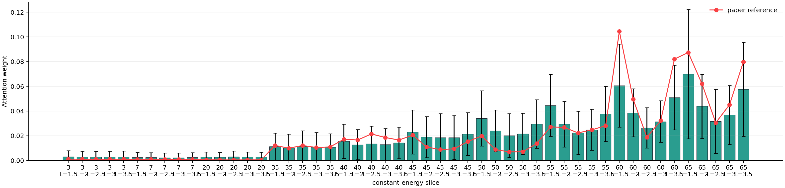

LNO327 CNN 训练任务报告
任务
| status | done |
|---|
| elapsed | 2.7 min |
|---|
| output | runs/cloud_fwhm10_n512/residual4d_wide_fwhm10_n512_warmfig3_e220_aux003_seed20260528_b64 |
|---|
结果
| test mean range-normalized MAE | 4.67% |
|---|
| test overall MAE | 0.409936 meV |
|---|
| test overall RMSE | 0.967142 meV |
|---|
| best epoch | 97 |
|---|
| best val loss | 0.00533897 |
|---|
解释性指标
| gate test mean | 0.425041 |
|---|
| gate test std | 0.280078 |
|---|
可视化
 训练 loss 曲线
训练 loss 曲线

4D attention 权重
日志尾部
[task] start mode=residual4d out=runs/cloud_fwhm10_n512/residual4d_wide_fwhm10_n512_warmfig3_e220_aux003_seed20260528_b64
warm-started 16 Fig.3 tensors from runs/cloud_fwhm10_n512/fig3_wide_fwhm10_n512_seed20260527_e280_b64/cnn.pt
trainable scope=no_fig3_encoder trainable=44757/105365
epoch 0001 train_loss=0.00768824 val_loss=0.0104114 best_val=0.0104114
epoch 0010 train_loss=0.00645209 val_loss=0.00914524 best_val=0.00718676
epoch 0020 train_loss=0.00658763 val_loss=0.00776097 best_val=0.00688165
epoch 0030 train_loss=0.00590385 val_loss=0.010482 best_val=0.00643542
epoch 0040 train_loss=0.00566374 val_loss=0.0063545 best_val=0.00635174
epoch 0050 train_loss=0.00518789 val_loss=0.00910116 best_val=0.00579979
epoch 0060 train_loss=0.00531337 val_loss=0.00648149 best_val=0.00579979
epoch 0070 train_loss=0.00513098 val_loss=0.00621646 best_val=0.00579979
epoch 0080 train_loss=0.00462065 val_loss=0.0092349 best_val=0.00569318
epoch 0090 train_loss=0.00444963 val_loss=0.00856167 best_val=0.00564578
epoch 0100 train_loss=0.00415055 val_loss=0.00801087 best_val=0.00533897
epoch 0110 train_loss=0.00402694 val_loss=0.00839998 best_val=0.00533897
epoch 0120 train_loss=0.00393704 val_loss=0.00842984 best_val=0.00533897
epoch 0130 train_loss=0.00344345 val_loss=0.00677581 best_val=0.00533897
epoch 0140 train_loss=0.0032118 val_loss=0.00888531 best_val=0.00533897
epoch 0150 train_loss=0.00310612 val_loss=0.00954309 best_val=0.00533897
epoch 0160 train_loss=0.00288978 val_loss=0.0105264 best_val=0.00533897
epoch 0170 train_loss=0.00292787 val_loss=0.00864381 best_val=0.00533897
early stopping at epoch 177 after 80 stale epochs
[task] best_epoch=97
[task] test_mean_range_mae=0.0466685